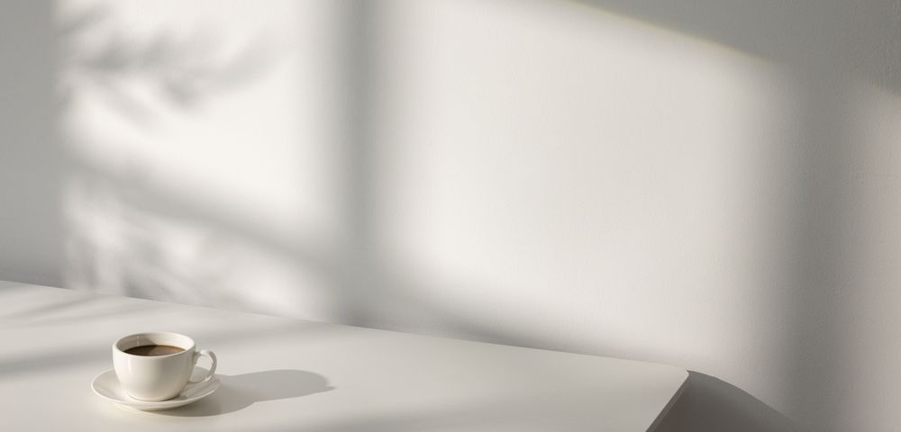
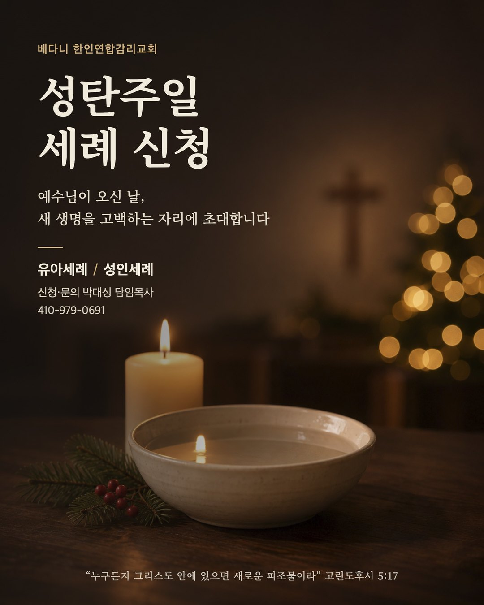
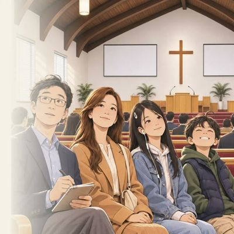

주일 이후 · 11월 22일 추수감사주일
누가복음 17:15-19 · 박대성 목사
“감사는 모든 것을 가진 사람의 고백이 아니라, 받은 은혜를 기억하는 사람의 고백입니다.”
설교 중에서3분 요약
예수님의 말씀을 듣고 제사장에게 가던 나병 환자 열 명이 모두 깨끗해졌습니다. 그런데 예수님께 돌아와 감사한 사람은 한 명이었습니다. 추수감사주일, 무엇을 얼마나 얻었는지보다 지금까지 붙들어 주신 은혜를 기억하자는 말씀이었습니다.
돌아온 한 사람은 유대인들이 멀리하던 사마리아 사람이었습니다. 은혜를 받은 사람은 열 명이었지만, 기억하고 돌아온 사람은 한 명이었습니다. 오늘 우리는 어느 쪽에 서 있습니까?
“하나님의 은혜는 우리 피부색, 어디 출신인지, 영어를 잘하는지 못하는지 전혀 상관하지 않습니다.”

지난주 화요일, 목사님은 요양원 예배를 마치고 한 성도님의 전화를 받아 다시 돌아가 기도를 부탁하신 분을 위해 기도했습니다. 그분은 목사님이 나온 지 15분, 20분 만에 세상을 떠나셨습니다. 받은 복만 바라보면 형편에 따라 감사도 줄어듭니다. 그 복을 주신 하나님을 기억하면 형편이 달라져도 감사할 수 있습니다.
“우리가 지금 당연하게 누리고 있는 것 가운데 사실 당연한 것은 하나도 없습니다.”
슬프면 울어도 되고, 힘들면 하나님께 힘들다고 말씀드려도 됩니다. 시편의 절반 이상이 탄식입니다. 다만 그 가운데서도 하나님이 여전히 나와 함께하신다는 사실은 놓치지 말아야 합니다.
“비록 무화과나무가 무성하지 못하며 포도나무에 열매가 없으며 … 우리에 양이 없으며 외양간에 소가 없을지라도 나는 여호와로 말미암아 즐거워하며 나의 구원의 하나님으로 말미암아 기뻐하리로다”하박국 3:17-18
사마리아 사람은 주님 발 앞에 엎드렸고, 예수님은 “일어나 가라 네 믿음이 너를 구원하였느니라” 하셨습니다. 목사님은 노숙인 식사 나눔, 여성 재소자 사역, 요양원 어르신 섬김, 영어 예배까지 올 한 해 베다니가 걸어온 길도 하나님이 붙들어 주신 은혜였다고 돌아보셨습니다.
기도제목
이번 주 한 걸음
속회에서 나눠 보세요올해 당연하게 여겼지만 돌아보니 은혜였던 것은 무엇인가요?
이번 주 함께 배울 찬양
GIFTED · 가사 영상 5분 30초
다니엘 3:18 “그렇게 하지 아니하실지라도”의 고백을 담은 찬양입니다. 작사·작곡 이오늘
주일 이후 팟캐스트
EP.13 당연하게 누리던 것이 내일 사라진다면?
이번 설교를 두 진행자가 18분 동안 한 걸음 더 나눕니다. 운전하거나 걸으면서 들어 보세요.
교회 소식

유아세례와 성인세례를 베풉니다. 박대성 담임목사님께 신청해 주세요.
410-979-0691 전화하기
예배 순서에 담긴 뜻부터 우리가 연합감리교회인 이유까지, 63편의 짧은 이야기.
웹툰 보기 ›